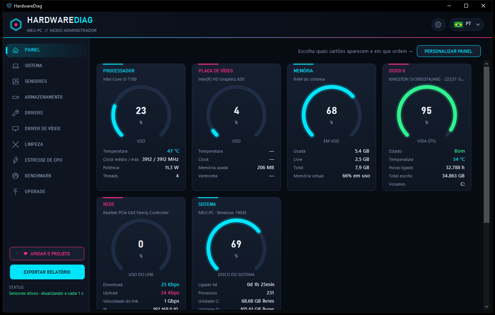
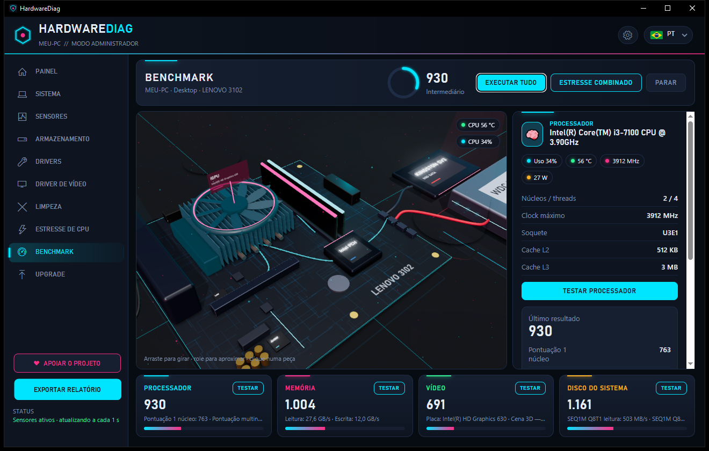
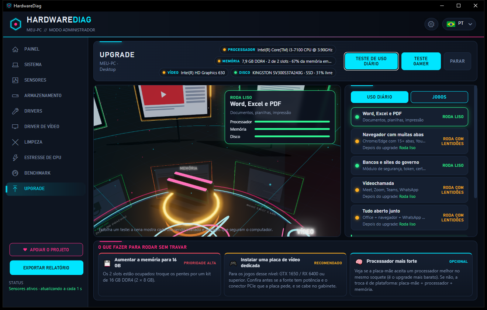
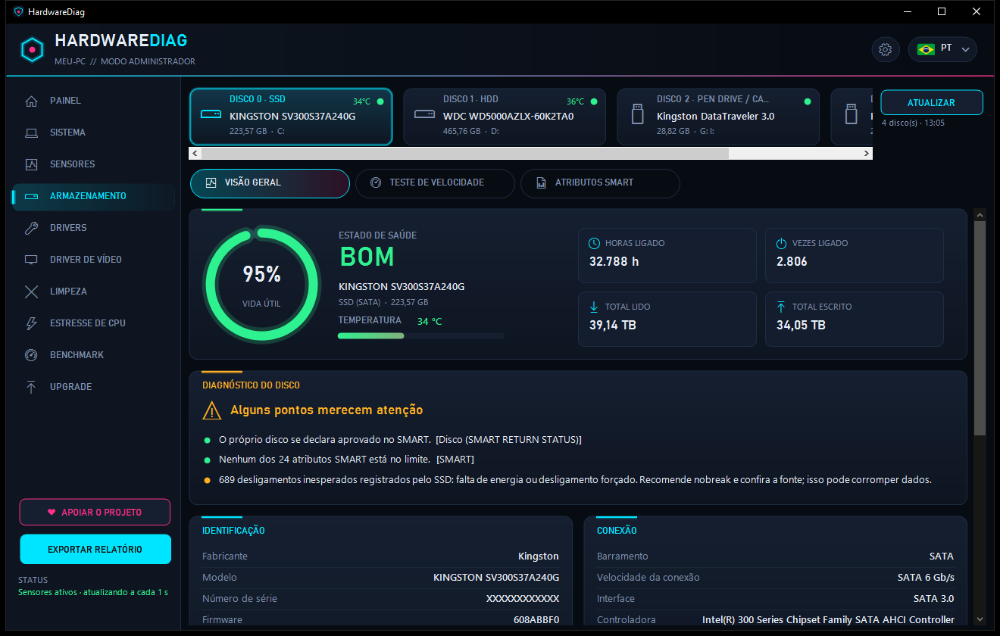
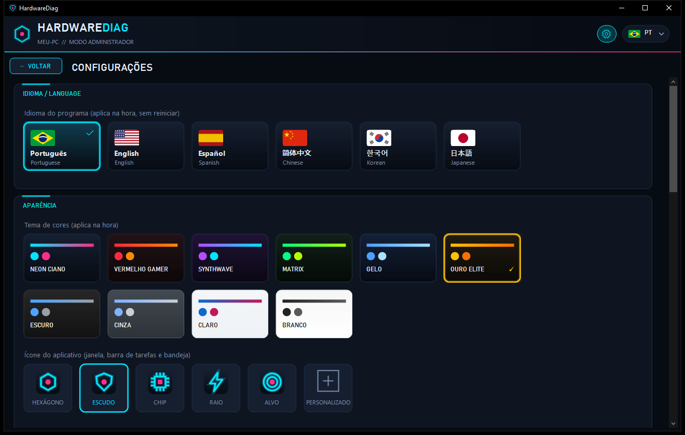

Diagnóstico de hardware completo para Windows
Temperaturas e sensores ao vivo, saúde do SSD e do HD, drivers, limpeza, estresse de CPU, benchmark com a placa-mãe do seu PC em 3D e dicas do que trocar para rodar sem travar. Grátis e em português.
Versão 1.0.1 · Windows 10 e 11 (64 bits) · grátis, sem propaganda

Tudo o que um técnico precisa
O HardwareDiag lê o hardware direto da fonte: sensores da placa-mãe, SMART dos discos e a tabela SMBIOS do firmware.
Painel ao vivo
Uso e temperatura de CPU e vídeo, memória, discos, rede, ventoinhas e bateria, com gráfico em tempo real.
Saúde dos discos
SMART, vida útil, horas ligado e total escrito. Diz o tipo exato: SSD SATA 2,5", M.2, mSATA, NVMe com PCIe ou HD com RPM.
Memória RAM
Cada slot da placa pelo nome, ocupado ou vazio, com tamanho, tipo DDR e velocidade de cada pente.
Benchmark 3D
Testes de processador, memória, vídeo e disco, com a placa-mãe do seu PC montada em 3D. Gráficos Leve, Normal ou Ultra.
Upgrade
Teste de uso diário e teste gamer: mostra o que roda liso, o que trava e o que trocar primeiro.
Drivers
Versão, data e assinatura de cada driver, atualização pelo Windows Update, backup e instalação limpa do driver de vídeo.
Limpeza e estresse
Limpa temporários e caches com segurança, e testa a CPU em carga total com parada automática por temperatura.
Relatórios
Exporte o básico ou tudo, em PDF, HTML, TXT ou JSON, pronto para mandar ao cliente.
Sempre atualizado
Avisa quando sai versão nova e se atualiza sozinho: baixa daqui do GitHub, confere o arquivo e reinicia.
Telas
Interface neon, em 6 idiomas e com 10 temas de cores.




Baixar e instalar
Um instalador só, que já traz tudo. Não precisa instalar o .NET.
- Baixe o Instalar_HardwareDiag_1.0.1.exe na página de versões.
- Abra o arquivo. Se aparecer "O Windows protegeu o computador", clique em Mais informações → Executar assim mesmo. O aviso aparece porque o programa é novo e ainda não tem assinatura digital.
- Siga o assistente: escolha a pasta, os atalhos e pronto.
♥ Apoie o projeto
O HardwareDiag é gratuito. Se ele te ajudou, considere fazer uma doação de qualquer valor: isso mantém o projeto vivo e com novidades.
Pix (você escolhe o valor)
Abra o app do seu banco, escolha Pix → Ler QR Code e aponte para o código. Ou copie a chave aleatória:
e13a548a-f773-4d9b-9c38-9045307f28f6
Outra forma de ajudar: dê uma ⭐ no GitHub e indique para os amigos.
Perguntas frequentes
O HardwareDiag é grátis?
Sim. É gratuito, sem propaganda e sem versão paga. Se quiser, você pode apoiar o projeto com uma doação por Pix.
Como ver a saúde do SSD ou do HD?
Abra a aba Armazenamento. O programa lê o SMART do disco e mostra a vida útil, a temperatura, as horas ligado, o total escrito e um diagnóstico em português.
Como saber quantos slots de memória RAM estão livres?
O HardwareDiag lê a tabela SMBIOS da placa-mãe e lista cada slot pelo nome, ocupado ou vazio, com o tamanho, o tipo (DDR3, DDR4, DDR5) e a velocidade de cada pente.
Funciona em quais versões do Windows?
Windows 10 e Windows 11, 64 bits. Ele pede para rodar como administrador, que é o que permite ler as temperaturas e o SMART dos discos.
O programa envia meus dados para a internet?
Não. Todas as informações ficam no seu computador, na pasta %LOCALAPPDATA%\HardwareDiag. O programa só consulta o GitHub do projeto para saber se há versão nova.
Como atualizar o HardwareDiag?
Em Configurações → Atualizações, clique em Procurar atualizações e depois em Atualizar agora. O programa baixa a versão nova, confere o arquivo e reinicia já atualizado. Ele também avisa sozinho quando sai uma versão nova.
Encontrei um problema. Como aviso?
Abra uma issue no GitHub contando o que aconteceu.
In English
HardwareDiag is a free hardware diagnostics tool for Windows 10 and 11: live sensors and temperatures, SSD/HDD health (SMART), exact RAM slot detection, drivers, cleanup, CPU stress test, a 3D benchmark of your own motherboard and upgrade advice. Available in English, Portuguese, Spanish, Chinese, Korean and Japanese.
⬇ Download for Windows